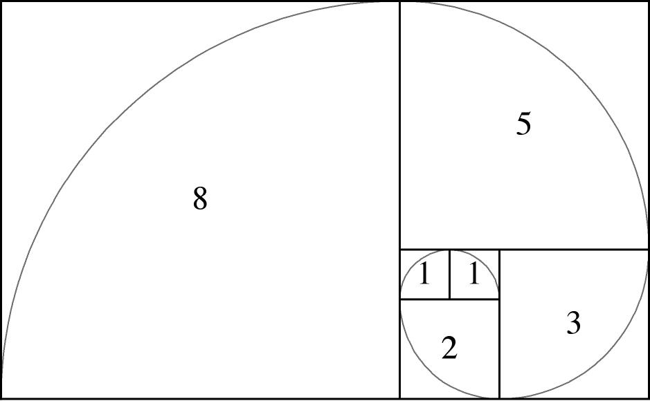

Fibonacci
Fibonacci
Medieval mathematician and businessman Fibonacci (Leonardo of Pisa) posed the following problem in his treatise Liber Abaci (pub. 1202):
How many pairs of rabbits will be produced in a year, beginning with a single pair, if in every month each pair bears a new pair which becomes productive from the second month on?
It is easy to see that 1 pair will be produced the first month, and 1 pair also in the second month (since the new pair produced in the first month is not yet mature), and in the third month 2 pairs will be produced, one by the original pair and one by the pair which was produced in the first month. In the fourth month 3 pairs will be produced, and in the fifth month 5 pairs. After this things expand rapidly, and we get the following sequence of numbers:
1,1,2,3,5,8,13,21,34,55,89,…
This is an example of a recursive sequence, obeying the simple rule that to calculate the next term one simply sums the preceding two:
F(1)F(2)F(n) = 11F(n-1)+F(n-2)
Thus 1+1=21+1=2, 1+2=31+2=3, 2+3=52+3=5, and so on.
This simple, seemingly unremarkable recursive sequence has fascinated mathematicians for centuries. Its properties illuminate an array of surprising topics, from the aesthetic doctrines of the ancient Greeks to the growth patterns of plants (not to mention populations of rabbits). Consider, for example, the following diagram: